Мои отношения с радио- и микроэлектроникой можно описать прекрасным анекдотом про Льва Толстого, который любил играть на балалайке, но не умел. Порой пишет очередную главу Войны и Мира, а сам думает “тренди-бренди тренди-бренди…”. После курсов электротехники и микроэлектроники в любимом МАИ, плюс бесконечные объяснения брата, которые я забываю практически сразу, в принципе, удается собирать несложные схемы и даже придумывать свои, благо сейчас, если неохота возиться с аналоговыми сигналами, усилениями, наводками и т.д. можно подыскать готовую микро-сборку и остаться в более-менее понятном мире цифровой микроэлектроники.
К делу. Сегодня речь пойдет о пайке. Знаю, что многих новичков, желающих поиграться с микроконтроллерами, это отпугивает. Но, во-первых, можно воспользоваться макетными платами, где просто втыкаешь детали в панель, без даже намека на пайку, как в конструкторе.
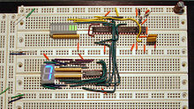
Так можно собрать весьма кучерявое устройство.
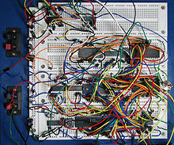
Но иногда хочется таки сделать законченное устройство. Опять-таки, не обязательно “травить” плату. Если деталей немного, то можно использовать монтажную плату без дорожек (я использовал такую для загрузчика GMC-4).
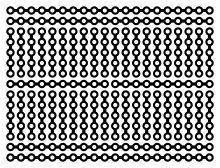
Но вот паять таки придется. Вопрос как? Особенно, если вы этого никогда раньше не делали. Я, возможно, открою Америку, но буквально несколько дней назад я сам для себя открыл волшебный мир пайки без особого геморроя.
До сего времени мое понимание сути процесса ручной пайки было следующим. Берется паяльник (желательно с жалом не в форме шила, а с небольшим уплощением, типа лопаточки), припой и канифоль. Для запайки пятачка, ты берешь капельку припоя на паяльник, макаешь паяльник в канифоль, происходит “пшшшшш”, и пока он идет, ты быстро-быстро касаешься паяльником места пайки (деталь, конечно, должна быть уже вставлена), и после нескольких мгновений разогрева припой должен каким-то волшебным образом переходить на место пайки.
Увы, у меня такой метод работал очень плохо, практически не работал. Детали нагревались, но припой никуда с паяльника не переходил. Очевидно, что проблема была в катализаторе, то есть канифоли. Того “пшшшшш”, что я делал, опуская конец паяльник в канифоль, явно не хватало, чтобы “запустить” процесс пайки. Пока ты тащишь паяльник к месту пайки, вся почти канифоль успевает сгореть. Именно поэтому, кстати, мне была совершенно непонятна природа припоя, внутри которого уже содержится флюс (какой-то вид катализатора, типа канифоли). Все равно, в момент набирания припоя на паяльник весь флюс успевает сгореть.
Экспериментальным путем я нашел несколько путей улучшить процесс:
Итак, мы почти уже у цели. Я так подробно все пишу, так как, честно, для меня это было прорыв. Как я случайно открыл, все, что нужно для пайки несложных компонент – это паяльник, самый обычный с жалом в виде шила:
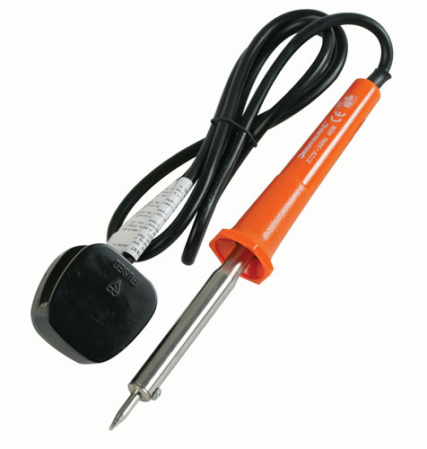
и припой c флюсом внутри:
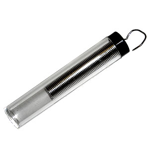
ВСЕ!
Все дело в процессе. Делать надо так:
Ключевой момент тут, как вы уже поняли, это подача припоя и флюса прямо на место пайки. А “встроенный” в припой флюс дает его необходимое минимальное количество, сводя засирание платы к минимуму.
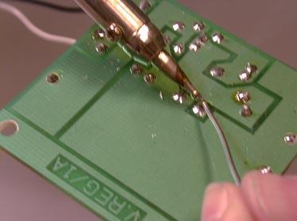
Ясное дело, что время ожидания на каждой фазе требует хотя бы минимальной практики, но не более того. Уверен, что любой новичок по такой методике сам запаяет Maximite за час.
Напомню основные признаки хорошей пайки:
Стоит заметить, что все выше сказанное относится к пайке элементов, которые вставляются в отверстия на плате. Для пайки планарных деталей процесс немного более сложен, но реален. Планарные элементы занимают меньше места, но требуют более точного расположения “пятачков” для них.
Планарные элементы (конечно, не самые маленькие) даже проще для пайки в некотором роде, хотя для самодельных устройств уже придется травить плату, так как на макетной плате особого удобства от использования планарных элементов не будет.
Итак, небольшой, почти теоретический бонус про пайку планарных элементов. Это могут быть микросхемы, транзисторы, резисторы, емкости и т.д. Повторюсь, в домашних условиях есть объективные ограничения на размер элементов, которых можно запаять обычным паяльником. Ниже я приведу список того, что лично я паял обычным паяльником-шилом на 220В.
Для пайки планарного элемента уже не получится использовать припой на ходу, так как его может “сойти” слишком много, “залив” сразу несколько ножек. Поэтому надо предварительно в некотором роде залудить пятачки, куда планируется поставить компонент. Тут, увы, уже не обойтись без жидкого флюса (по крайне мене у меня не получилось).
Фаза 1
Капаете немного жидкого флюса на пятачек (или пятачки), берете на паяльник совсем немного припоя (можно без флюса). Для планарных элементов припоя вообще надо очень мало. Затем легонько касаетесь концом паяльника каждого пятачка. На него должно сойти немного припоя. Больше чем надо, каждый пятачек “не возьмет”.
Фаза 2
Берете элемент пинцетом. Во-первых, так удобнее, во-вторых пинцет будет отводить тепло, что очень важно для планарных элементов. Пристраиваете элемент на место пайки, держа его пинцетом. Если это микросхема, то надо держать за ту ножку, которую паяете. Для микросхем теплоотвод особенно важен, поэтому можно использовать два пинцета. Одним держишь деталь, а второй прикрепляешь к паяемой ножке (есть такие пинцеты с зажимом, которые не надо держать руками). Второй рукой снова наносишь каплю жидкого флюса на место пайки (возможно немного попадет на микросхему), этой же рукой берешь паяльник и на секунду касаешься места пайки. Так как припой и флюс там уже есть, то паяемая ножка “погрузится” в припой, нанесенный на стадии лужения. Далее процедура повторяется для всех ног. Если надо, можно подкапывать жидкого флюса.
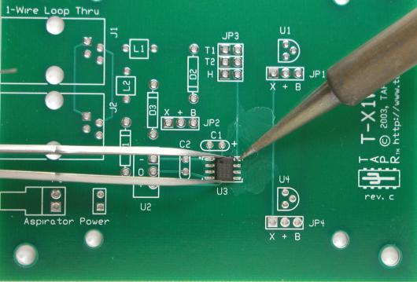
Когда будете покупать жидкий флюс, купите и жидкость для мытья плат. Увы, при жидком флюсе лучше плату помыть после пайки.
Сразу скажу, я ни разу не профессионал, и даже не продвинутый любитель в пайке. Все это я проделывал обычным паяльником. Профи имеют свои методы и оборудование.
Конечно, пайка планарного элемента требует куда большей сноровки. Но все равно вполне реально в домашних условиях. А если не паять микросхемы, а только простейшие элементы, то все еще упрощается. Микросхемы можно покупать уже впаянные в колодки или в виде готовых сборок.
Вот картинки того, что я лично успешно паял после небольшой тренировки.
Это самый простой вид корпусов. Такие можно ставить в колодки, которые по сложности пайки такие же. Эти элементарно паяются по первой инструкции.
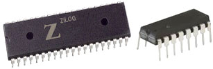 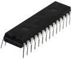
Следующие два уже сложнее. Тут уже надо паять по второй инструкции с аккуратным теплоотводом и жидким флюсом.
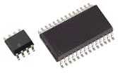 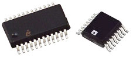
Элементарные планарные компоненты, типа резисторов ниже, весьма просто паяются:
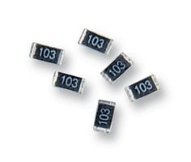
Но есть, конечно, предел. Вот это добро уже за пределами моих способностей.
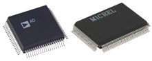 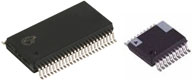 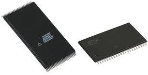
Под занавес, пару дешевых, но очень полезных вещей, которые стоит купить в дополнение к паяльнику, припою, пинцету и кусачкам:
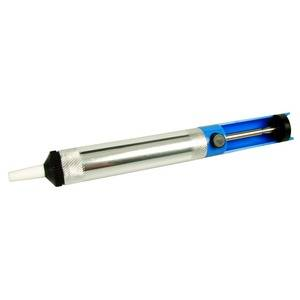
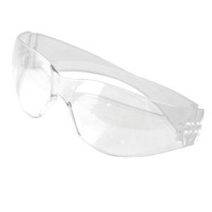
Успехов в пайке!